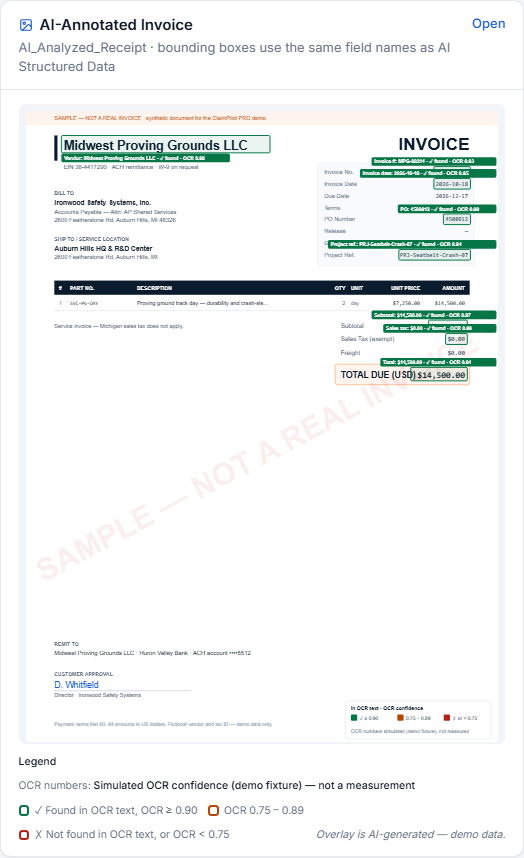
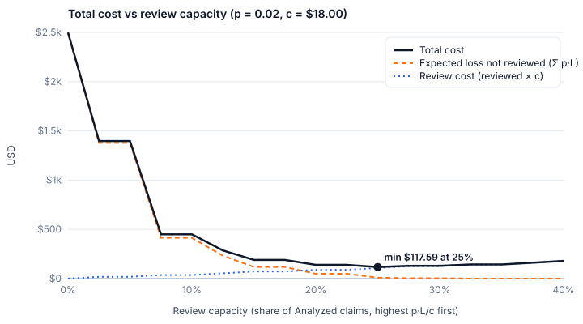

Drop the invoice in
A scan, a phone photo or a PDF. Nothing to fill in first.
Accounts payable · invoice-processing agent
Finance teams check a thousand supplier invoices by hand every month. It reads them, reconciles them and decides — and when it cannot read a field, it says so instead of guessing a value and moving on.
No account, no install. Prefer GitHub? Open an issue instead.

priya.natarajan@ironwood.example
Toledo-Controller-26
reviewer role · offline mock mode · no API key needed
How it works
A scan, a phone photo or a PDF. Nothing to fill in first.
Every field is verified against the source, then checked against purchase orders, goods receipts and past invoices.
Each escalated claim arrives with the reason attached. It posts only after you have seen it.
End to end
The difference isn't that the AI is clever. It's that the chain finishes on its own — and every step can be explained, priced, and traced.
OCR reads the invoice, an LLM extracts the fields, and every field is grounded back to the document text. Extraction errors get caught, not trusted.
Pulls PO master data, goods-receipt notes and supplier master data on its own, then checks the invoice against history for duplicates. Exceptions don't depend on someone spotting them.
18 deterministic rules score 0–100 and land in Low / Medium / High. A single High finding makes the whole claim High.
If the expected loss is below the cost of one review, it clears the claim itself. Above that, it escalates. That's the quantified answer to "how far should this be automated?"
A state machine drives the transitions, posts a simulated MIRO document, and writes to an append-only audit log. Every click carries an idempotency key.
CSV export, an audit report, and a traceable decision chain. Why it cleared, why it stopped — both point back to a specific rule and a specific field.
The rule it follows
Not "the model felt good about it." A reproducible piece of arithmetic: is a review even worth its own cost?
p·L ≤ c → clears on its own
When the expected loss is below the cost of one human review, reviewing costs more than being wrong — so it clears the claim. Otherwise it escalates.
Two constant constraints always go to a human: R-03 duplicate invoices and R-17 bank account changes
are excluded from the arithmetic — their damage isn't money. Work is ranked by p·L / c.
Rules explain and score; the LLM never assigns the score.

docs/cost-curve.csv in the repo (pnpm cost:curve).Real vs simulated
No hedging here: every item below is something you can run and check locally.
Optional, and real: LLM field extraction. Set AI_MODE=live to call DeepSeek;
the default mock mode is deterministic, so runs are reproducible.
Not claimed: no live SAP integration, and no ISO 27001 or SOC 2 certification.
Why believe it
Field-level grounding isn't a marketing line. Here's the benchmark: the share of documents where at least one key field can't be found in the OCR text.
Honest boundary: all 130 demo invoices extract correctly, so on their own they only show that grounding
doesn't false-alarm on clean data. The three numbers above run on 650 degraded scans and 852 injected errors
(pnpm bench:grounding; full table in docs/GROUNDING_BENCH.md).
Verifiable
Every number on this page can be reproduced from the repo. Here's the mapping.
| Number | What it means | Where it lives in the repo |
|---|---|---|
| 130 claims / $3,815,541.16 | Invoice count and total value in the demo dataset | pnpm db:reset then pnpm kpi:report |
| 65.8% / 34.2% | Auto-clear rate / exception rate | pnpm kpi:report (the same formulas the dashboard and /api/kpis use) |
| $413,603.26 | High-risk exposure | pnpm kpi:report |
| 9.6 hours / 4.2 days | Average cycle time / human baseline | pnpm kpi:report; the human baseline is in the repo README |
| 18 rules · 0–100 · 3 tiers | The risk scoring system | src/lib/risk/rules.ts, docs/RISK_RULES.md |
| $2,497.99 → $117.59 | Total cost with no review vs at the optimal 25% review rate | docs/cost-curve.csv (pnpm cost:curve) |
| 289 tests | Automated test count, CI green | pnpm test (27 test files, all passing) |
| 55.8% / 15.2% / 12.2% | OCR key-field grounding failure rate | docs/GROUNDING_BENCH.md (pnpm bench:grounding) |
Run it locally
Needs Node 22.13+ and pnpm 12. Offline mock mode — no API key.
# 1) clone git clone https://github.com/Szlqjc1/claimpilot-pro.git # 2) install and reset the demo data (130 claims, 3 users) cd claimpilot-pro && pnpm install && pnpm db:reset # 3) start, then open http://localhost:3000 pnpm dev # Use http://localhost:3000 — not 127.0.0.1 (session cookies are scoped per host)
Demo account: priya.natarajan@ironwood.example / Toledo-Controller-26
(reviewer — plant finance controller). The sign-in page lists all three demo accounts.
We're looking for AP and finance teams to put this through real-world testing. You don't need to be technical — just tell us which step you don't follow, and which one you wouldn't trust.
The form takes two minutes and needs no account. No GitHub? That's fine. Prefer GitHub? Open an issue instead.